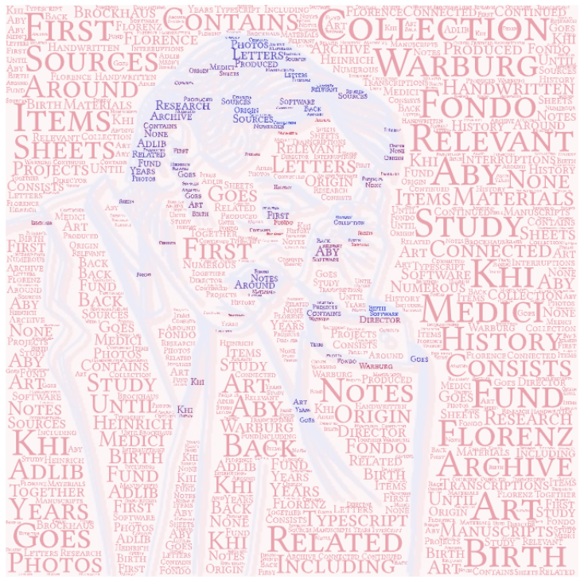
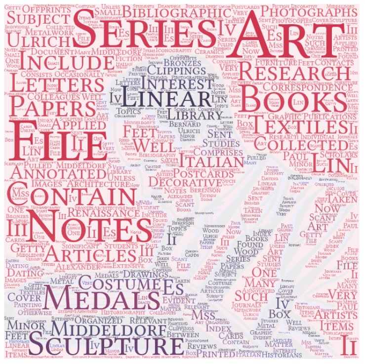
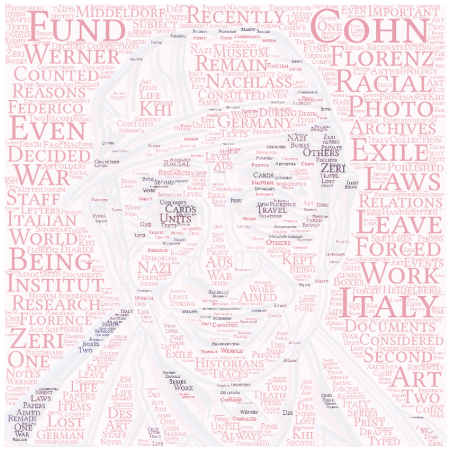
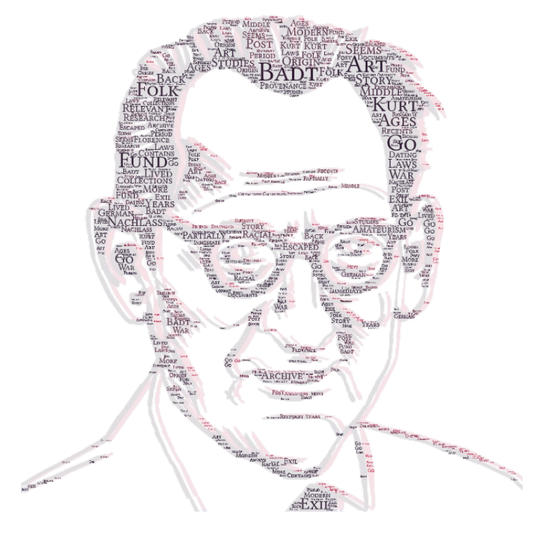
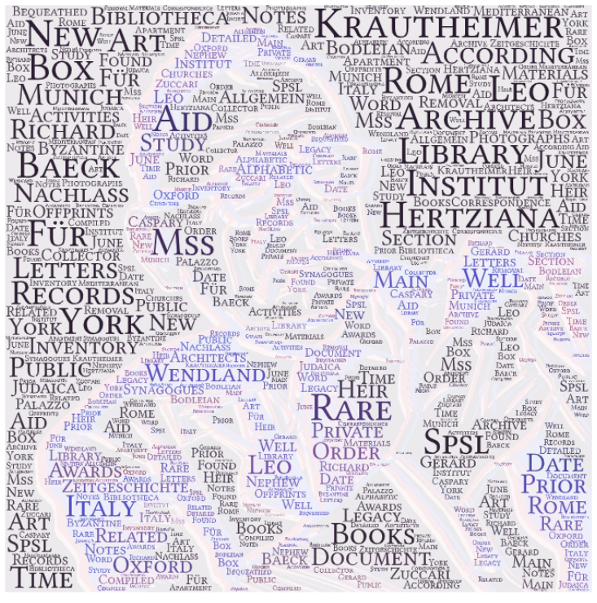
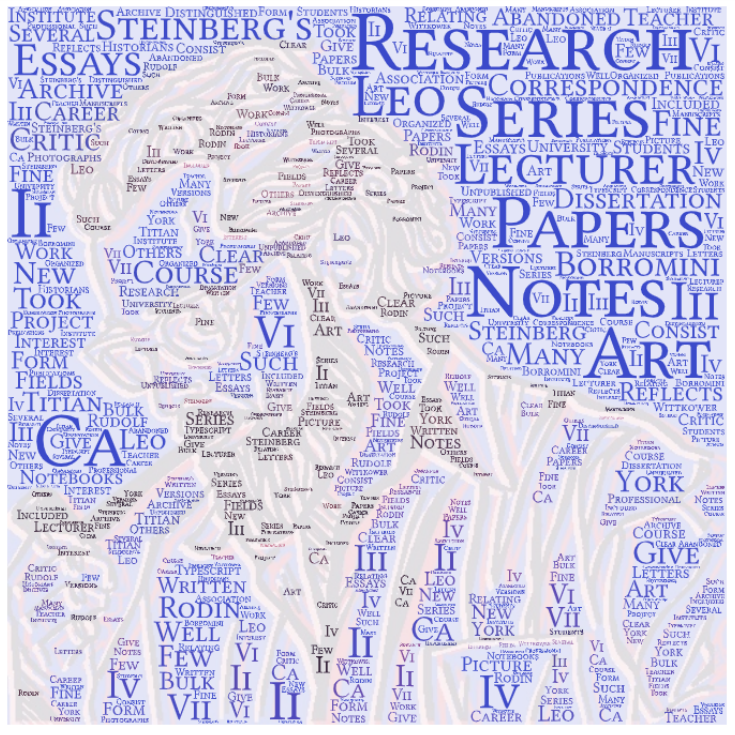
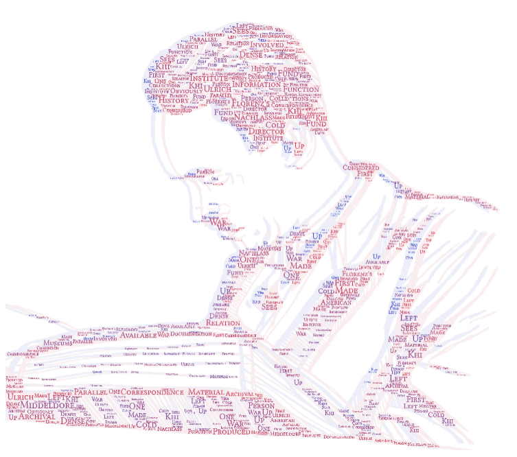
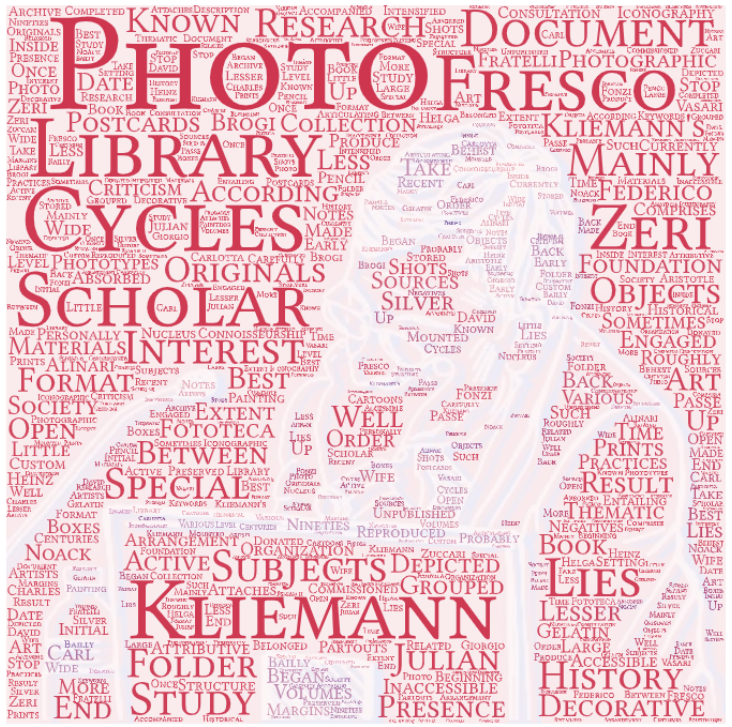

Humboldt
Welcome to the Humboldt University Storytelling Project!
In the next pages we will retrace some steps that made this University internationally renowed, following the stories of the people that kept it alive through their contributions. In particular, our aim is to enhance the rich humanistic heritage in an academic context traditionally more oriented to scientific disciplines. In order to do that, our narration will present seven art historians and their collections exploiting data visualization tools.
Why did we choose the Humboldt?
Did you know? The historical building where it is located was built in 1753 by the will of Heinrich, the Prince of Prussia, but it was not until 1810 that Wilhelm von Humboldt founded the University. From that moment on, the Humboldt has been growing and growing.
| Name | Code | Occurrences | People | Country |
|---|---|---|---|---|
| Humboldt University of Berlin | Q152087 | 18 | Leo Steinberg - Aby Warburg - Ulrich Middeldorf - Werner Cohn - Julian Kliemann - Kurt Badt - Richard Krautheimer | Germany |
| Ludwig Maximilian University of Munich | Q55044 | 17 | Aby Warburg - Ulrich Middeldorf - Otto Lehmann-Brockhaus - Julian Kliemann - Kurt Badt - Ernst Kitzinger - Richard Krautheimer | Germany |
| New York University | Q49210 | 13 | John Pope-Hennessy - Leo Steinberg - Everett Fahy - Werner Cohn - Julius S. Held - Richard Krautheimer | United States of America |
| Harvard University | Q13371 | 11 | Federico Zeri - Ernst Kitzinger - Leo Steinberg - Everett Fahy | United States of America |
How did we choose it?
We selected the Humboldt among the other academies and research institutes present in Artchives because of its interesting network of relations, which was one of the richest. In fact, querying both its overall occurrences in the database and its specific mentions either as place of formation or employment or as entity with which historians have a generic relation, we obtained similar results: the Humboldt popped on the top of the rankings, followed by the Ludwig Maximilian University of Munich and the New York University.
| Name | Code | Birth | Death | Citizenship | Roles | Collections |
|---|---|---|---|---|---|---|
| Kurt Badt | Q1629748 | 1890 | 1973 | Germany | Art Historian | Nachlass Kurt Badt |
| Name | Code | Birth | Death | Citizenship | Roles | Collections |
|---|---|---|---|---|---|---|
| Julian Kliemann | Q85761254 | 1949 | 2015 | Germany | University Teacher | Fototeca Julian Kliemann |
| Name | Code | Birth | Death | Citizenship | Roles | Collections |
|---|---|---|---|---|---|---|
| Richard Krautheimer | Q90407 | 1897 | 1994 | Germany | Art Collector-Professor | Nachlass Richard Krautheimer |
| Name | Code | Birth | Death | Citizenship | Roles | Collections |
|---|---|---|---|---|---|---|
| Leo Steinberg | Q457739 | 1920 | 2011 | Russia | Critic-Art Historian-Professor | Leo Steinberg Research Papers |
| Name | Code | Birth | Death | Citizenship | Roles | Collections |
|---|---|---|---|---|---|---|
| Aby Warburg | Q60185 | 1866 | 1929 | Germany | Art Historian | Fondo Aby Warburg |
| Name | Code | Birth | Death | Citizenship | Roles | Collections |
|---|---|---|---|---|---|---|
| Ulrich Middeldorf | Q1715096 | 1901 | 1983 | Germany | Art Historian-Professor-Director | Ulrich Middeldorf Papers-Nachlass Urlich Middeldorf |
| Name | Code | Birth | Death | Citizenship | Roles | Collections |
|---|---|---|---|---|---|---|
| Cohn Werner | Q18935222 | 1905 | 1960 | Germany | Art Historian-Bookseller | Nachlass Werner Cohn |
A story of ordinary excellence The nowadays Department of Art and Visual History was originated from the Friedrich-Wilhelms-Universität’s art history department. This latter was instituted in 1875 and grew under the presence of distinguished German scholars, such as Herman Grimm, Heinrich Wölfflin and Adolph Goldschmidt. The Department stands out for the deep - but also broad - understanding of its subject, based on an approach toward visual history that expresses the optimal balance between tradition and innovation.
Time flowing over collections. The works here presented are conceived as the tangible expression of the themes of interest of each historian. Most of these collections were realized over decades, but here we decide to contextualise them in the moment of their birth, conceived as the starting point of life-long passionate research projects.
A first glance at the charts representing the periods covered by the collections reveals the wideness of the time-span covered by the research activities at Humboldt. In fact, the examined artistic historical periods range from medieval ages to contemporary times, across the width of visual media, including many different disciplines, such as: architecture, sculpture, drawing, painting, design, photography, and also more.
Connections and relations The wide coverage of different historical periods is confirmed by the fact that these seven experts share generally no more than one (at most two) ages of interest.
Iframe - Target for a Link
.png)
University
The Book of Careers
Each chapter of this book is dedicated to one of the protagonists of our storytelling.

Use your keyboard arrow keys to turn the pages and click on the historians’ names or on the writing 'Find More' to know more about their careers, biographies, and collections!


-
Aby Warburg
Fondo Aby WarburgThe fund consists in around 1700 items including typescript sheets, manuscripts and handwritten notes, transcriptions, photos, some letters.
 -
Ulrich Middelforf
Ulrich Middeldorf Papers-Nachlass Urlich MiddeldorfThe fund is made up of material produced by Middeldorf in parallel to its function as director of KHI. This is a dense correspondence that, obviously, is to be considered in relation to the institutional one, but which sees it involved in the first person.
 -
Cohn Werner
Nachlass Werner Cohn1145 Units/items; 20886 Documents: notes, typed and handwritten texts; cards; sketches; drafts; letters; travel diaries; photos and print papers.
 -
Kurt Badt
Nachlass Kurt BadtStory of Amateurism in art Provenance Research and Exil Archive.
 -
Richard Krautheimer
Nachlass Richard KrautheimerPrivate records and photographs; awards; offprints; notes on activities as collector; study materials on Byzantine art, synagogues, Judaica, churches in Rome, Italy and the Mediterranean, as well as on architects; 22 boxes of correspondence in alphabetic order (n.b.: there are no letters prior to 1952, most letters date from the time after Krautheimer’s removal to Rome in 1971).
 -
Leo Steinberg
Leo Steinberg Research PapersThe Leo Steinberg Research Papers consist of research notes, correspondence relating to his lectures and essays, papers written by his students, several versions of some of his essays, an abandoned dissertation project, and many of his notebooks from courses he took at the Institute of Fine Arts, New York University. The archive reflects Steinberg's career as an art critic, lecturer and teacher from ca. 1945-ca.1996.
 -
Ulrich Middeldorf
Ulrich Middeldorf Papers-Nachlass Urlich MiddeldorfThe fund is made up of material produced by Middeldorf in parallel to its function as director of KHI. This is a dense correspondence that, obviously, is to be considered in relation to the institutional one, but which sees it involved in the first person.
 -
Julian Kliemann
Fototeca Julian KliemannThe collection comprises 2,507 photo objects (silver gelatin prints and negatives in various formats) as well as 1,348 postcards. The folders mainly document fresco cycles reproduced in photos by the best-known art photographers (Fratelli Alinari, Brogi, Noack).

How are they related? Sharing research themes and the participation to the same context determine a very likely connection between notorious scholars. In fact, even lacking an overlap on activity periods, it is possible to assume that the work of the predecessors influenced the progress of academic activities about their subjects of interest in their cultural environment even after their death. However, an additional chronological intersection between careers increases - proportionally to its duration- the possibility that two or more experts cooperated directly.
When the target attribute of a link matches the name of an iframe, the link will open in the iframe.
.png)